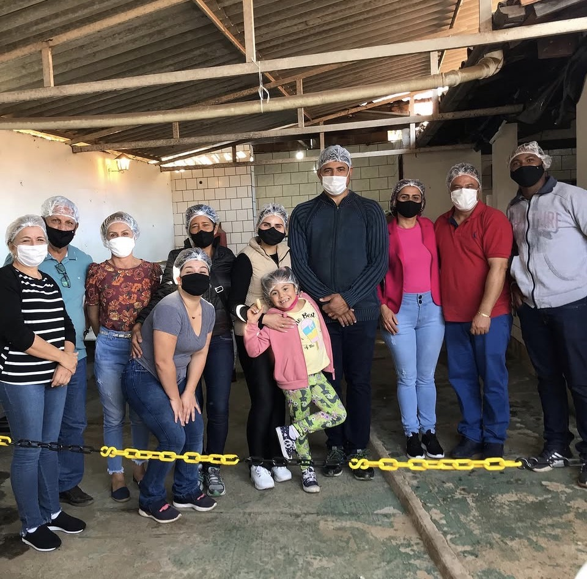
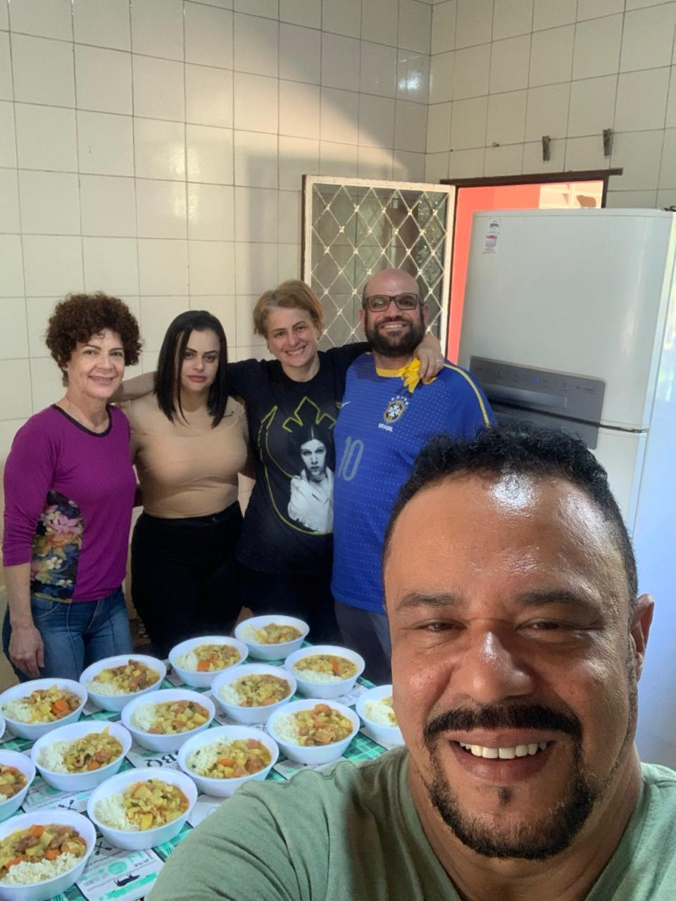
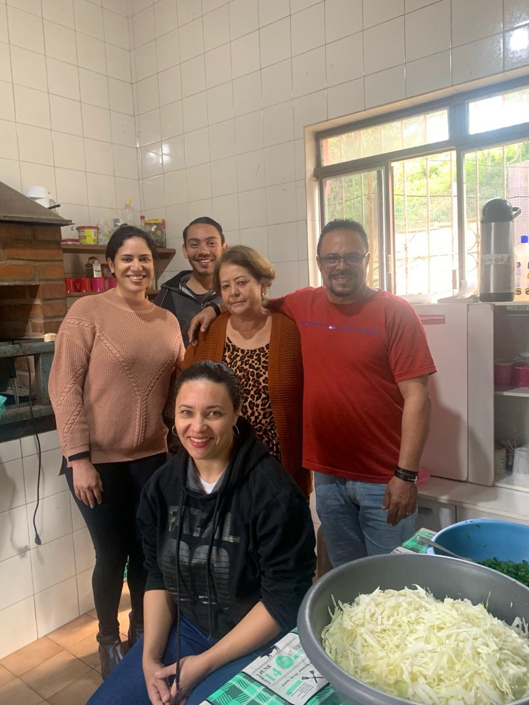
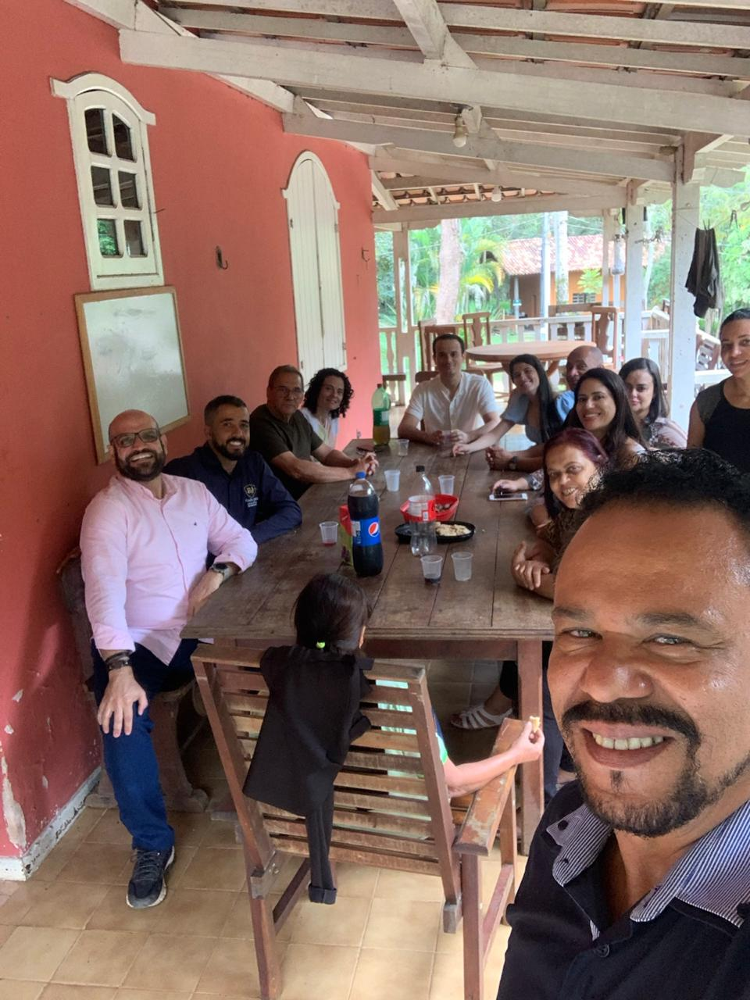
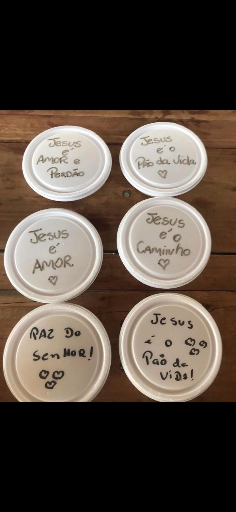

Alívio para a fome
Uma refeição preparada com cuidado ajuda a atender uma necessidade básica e urgente.
Ajudar alguém é oferecer mais do que aquilo que temos: é compartilhar cuidado, respeito e esperança. Quando fazemos o bem ao próximo, também cultivamos o melhor que existe em nós.
Com carinho e união, os Irmãos de Caridade preparam e distribuem refeições para pessoas em situação de rua e vulnerabilidade social.

Uma rede de pessoas unidas pela vontade de servir, compartilhar e levar alimento e acolhimento a quem mais precisa.

O Grupo Espírita Irmãos de Caridade reúne voluntários que dedicam tempo, trabalho e carinho ao preparo e à entrega de refeições. Cada ação é construída com colaboração e com o desejo de tratar todas as pessoas com dignidade.
Acreditamos que uma refeição pode aliviar a fome, trazer conforto e lembrar a alguém que ele não está esquecido.
O impacto não está apenas no alimento entregue, mas também no cuidado e na humanidade presentes em cada encontro.
Uma refeição preparada com cuidado ajuda a atender uma necessidade básica e urgente.
Quando cada pessoa contribui como pode, a comunidade se torna mais forte e acolhedora.
Servir com respeito é reconhecer que toda pessoa merece atenção, carinho e consideração.
Por trás de cada ação existem pessoas que doam seu tempo, sua energia e seu coração para fazer o bem.

Juntos, fazemos a solidariedade acontecer.

Planejando ações e somando esforços.

Cada contribuição ajuda a levar cuidado adiante.
As fotos são registros das atividades do grupo. Antes de publicar o site, confirme que as pessoas fotografadas autorizaram a divulgação das imagens.
Selecionar os ingredientes, cozinhar, organizar as marmitas e servir: cada etapa é parte de uma corrente de cuidado.
O trabalho começa com muitas mãos e disposição.

Doações ajudam a transformar ingredientes em refeições.

Uma refeição acompanhada de respeito e acolhimento.

Alimento preparado para chegar a quem precisa.

Todo detalhe faz parte do cuidado.

Além do alimento, um gesto que transmite esperança.
Uma contribuição, mesmo pequena, pode se transformar em parte de uma refeição. Se puder, ajude com os itens que fazem falta na preparação das marmitas.
Para combinar a entrega e confirmar quais itens são mais necessários no momento, entre em contato com o grupo.
Um pacote de arroz, alguns legumes ou uma doação de carne podem parecer pouco quando vistos isoladamente. Quando muitas pessoas colaboram, esses itens se unem e ajudam a colocar uma refeição na mesa de quem está passando por dificuldades.
Doe de coração e dentro das suas possibilidades. Toda ajuda recebida com responsabilidade é valiosa.
Veja como doar por PixDe acordo com as informações fornecidas pelo grupo, cada R$ 7,00 doados podem ajudar a custear uma refeição. A contribuição financeira ajuda na compra dos ingredientes e dos materiais necessários.
Escolha o valor que cabe no seu orçamento. Toda contribuição é bem-vinda e ajuda a manter essa corrente de solidariedade.
33.795.005/0001-07Confira os dados do destinatário no aplicativo do seu banco antes de confirmar a transferência.
Empresas: conforme as informações fornecidas, também é possível consultar o grupo sobre contribuição por boleto bancário emitido diretamente para a empresa.
Os valores de refeições são uma estimativa informada pelo grupo e podem variar conforme os custos. Confirme a chave Pix e os contatos antes da publicação.
Uma refeição não resolve todas as dificuldades da vida, mas pode aliviar a fome, renovar as forças e levar um pouco de conforto a quem enfrenta um dia difícil. Que nunca nos faltem sensibilidade para enxergar o próximo e disposição para ajudar conforme nossas possibilidades.
Aos voluntários, doadores, parceiros e a cada pessoa que acredita nessa missão, nossa sincera gratidão. Que cada gesto de amor continue se transformando em alimento, acolhimento e esperança. Muito obrigado!
Voltar ao início ↑